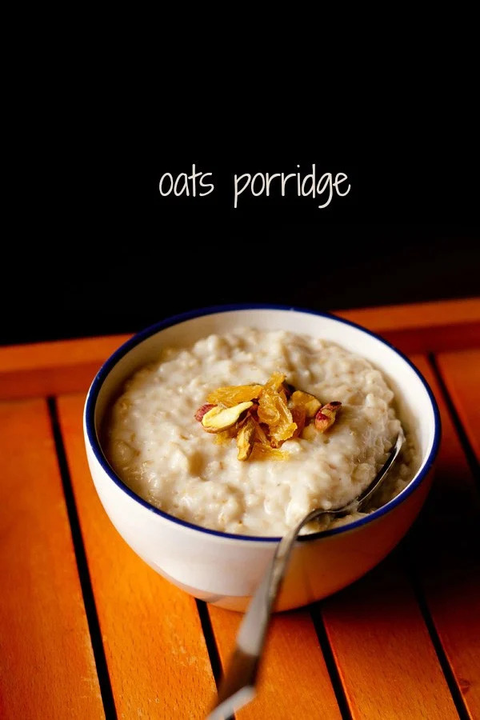

Sweet Oats Porridge

What is Sweet Oats Porridge?
Oats Porridge is a traditional breakfast
dish that's enjoyed in many different forms around the world.
Wonderfully hearty steel-cut oats are simmered with water or milk until thick and creamy for a satisfying morning meal that keeps you full for hours.
What are the Ingredients required to make one?
- Steel-cut Oats specifically for creamy texture (U can also use Rolled ones)
- Any kind of Milk
- Sugar or Jaggery
- Fragrant spices like Saffron/Cardamom/Nutmeg
- Optional : Dryfruits of choice like Almonds/Cashews/Raisins etc.
Here is how to make a delicious bowl of Oats Porridge step-by-step:
- Step 1:First take 40gm(for 1 serving) of oats in a pan and toast them on high flame till fragrant. Be carefull not to burn them, just lightly toast so that they retain their texture after cooking and do not become mushy.
- Step 2:Transfer the oats to a pot and add water till it almost covers the oats completely.Add the desired spices to the oats to enhance their flavour and cook for 3-4 mins on medium flame
- Step 3:Turn the flame down, add the sugar and jaggery and mix till all of it melts
- Step 4:Turn off the flame, add the milk and cook for 2 more mins
- Step 5:Garnish with fruits/dryfruits of your choice and enjoy your delicious and healthy bowl of sweet oats porridge!
Back to Top
Back to Main Menu